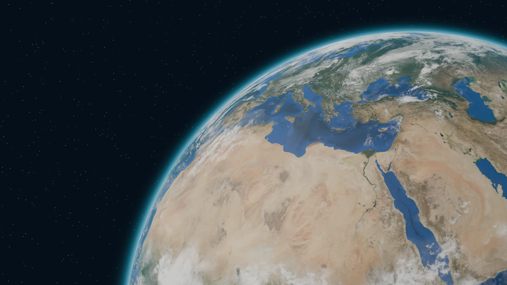
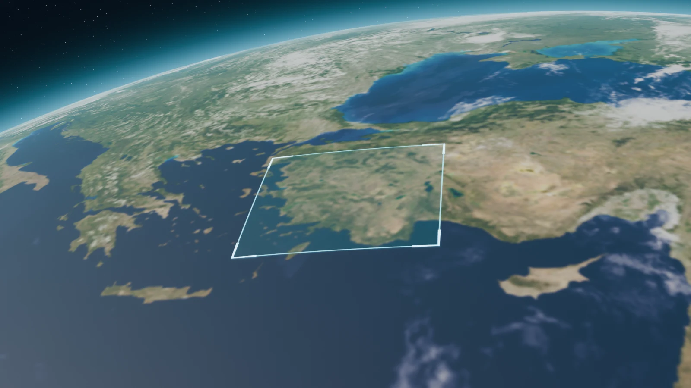
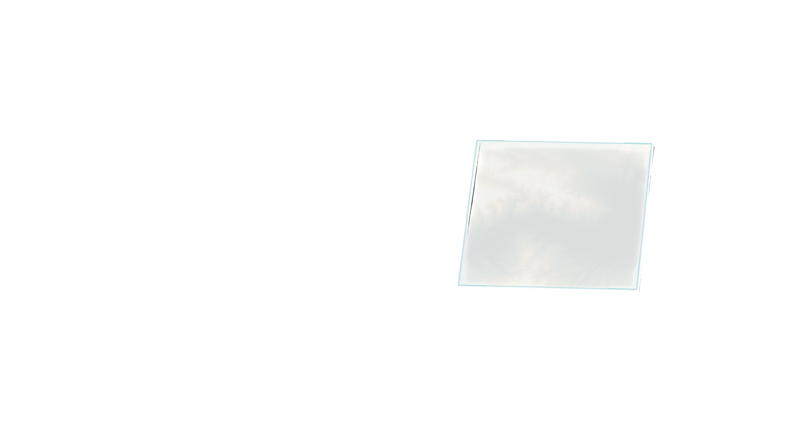
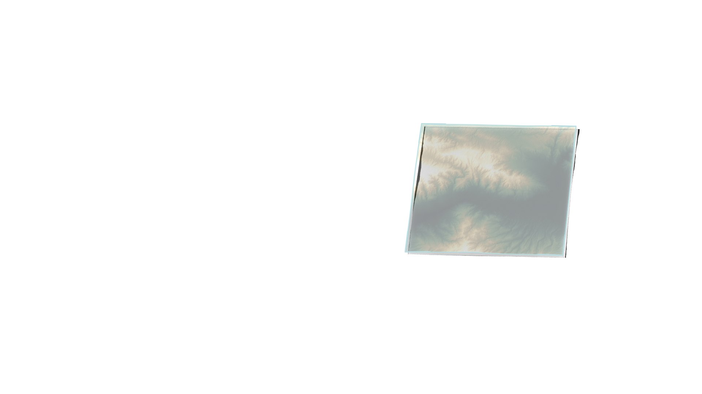
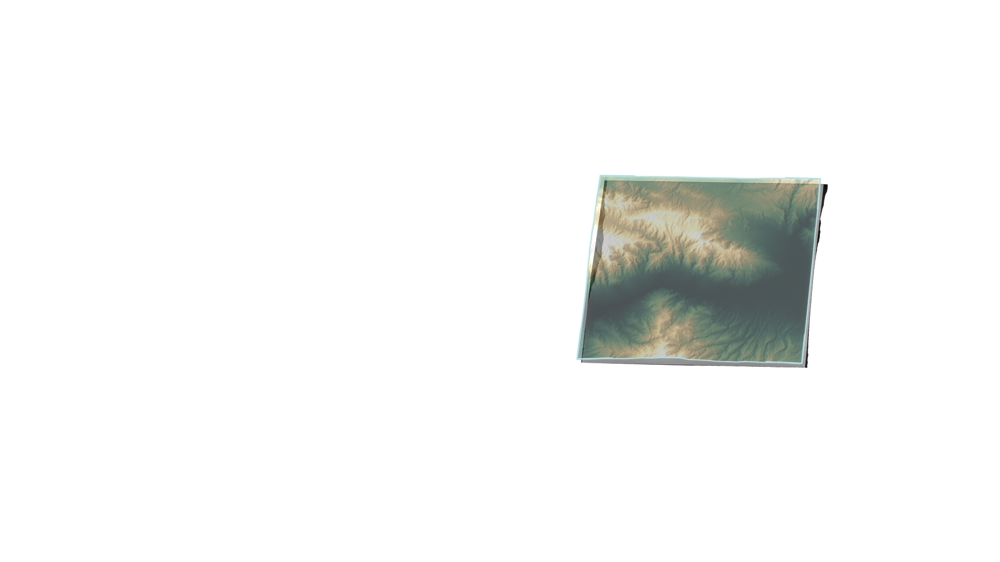
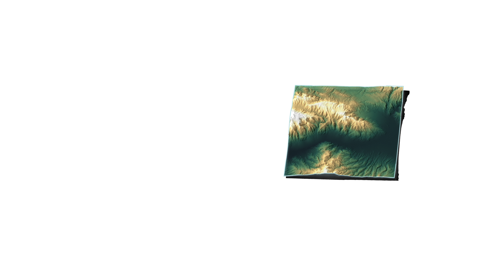
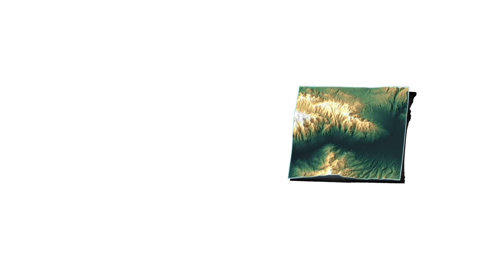
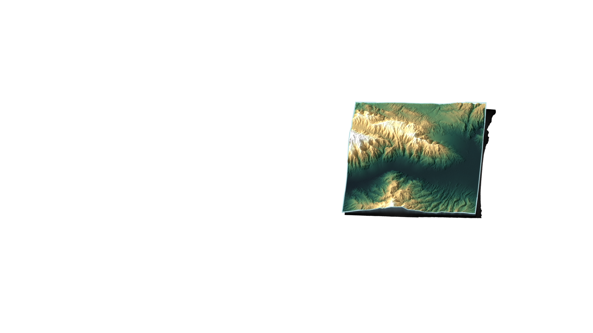
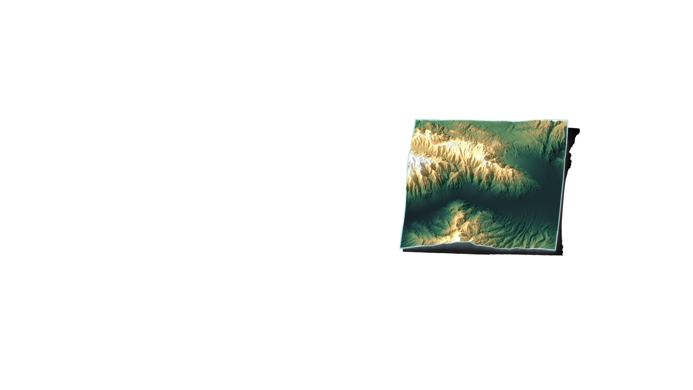
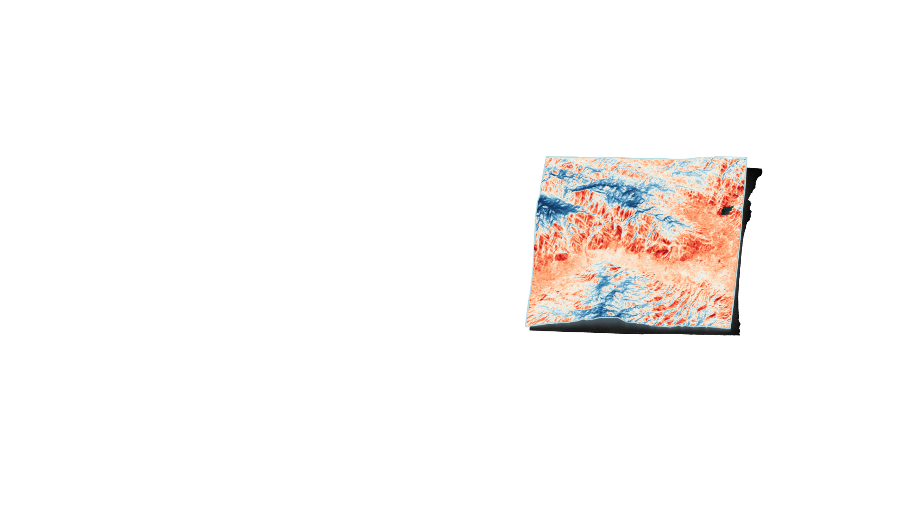
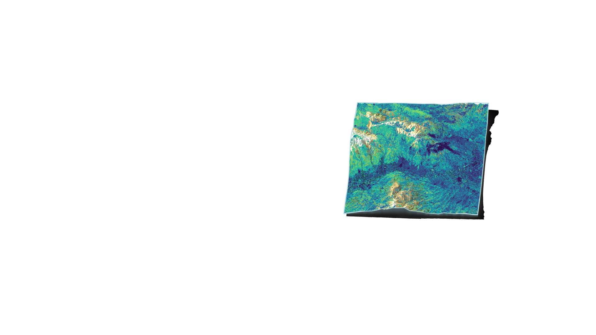
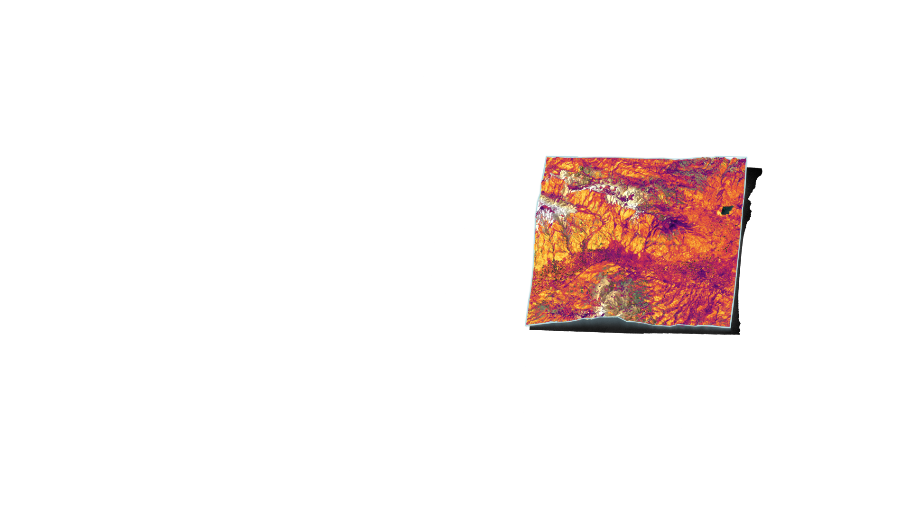
Earth data. Evidence. Priority.
Know where to look next.
OrbGSS turns Earth observation and geoscience data into evidence-backed spatial priorities that help teams decide where to investigate next.
Kızıldere — Büyük Menderes graben, Denizli, Türkiye 37.9794° N, 28.7907° E Rendered orbital sequence — not sensor imagery

A real area, before any analysis.
Kızıldere sits in the Büyük Menderes graben in Denizli, Türkiye, as Landsat 8 photographed it.
Three layers over the same ground.


Where to look first.
One ranking across the area of interest, so a team can order the ground instead of guessing at it.
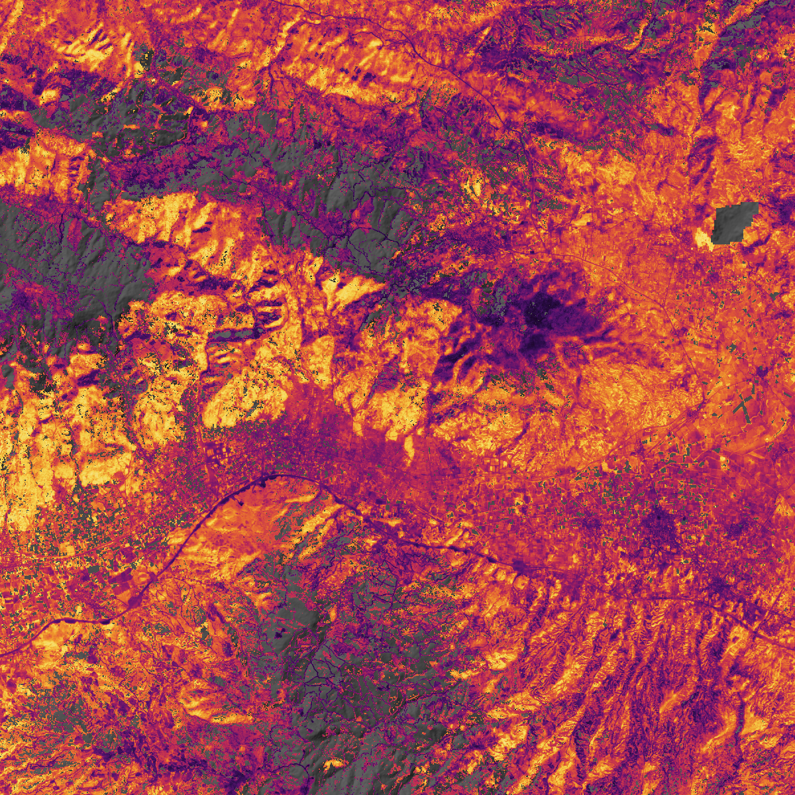
- Why it matters
- It turns a 36 × 36 km area into an ordered shortlist before anyone travels to it.
- What it is for
- Deciding where to investigate next, with the evidence and its provenance attached.
Inspection aid
Hold a layer against the photograph.
Wipe between the natural-colour view of the area of interest and one derived layer over the same ground.

One workflow, applied where the evidence supports it.
Each domain states where it actually stands, and nothing in development is presented as a finished product.
-

Geothermal
Active · First application
-
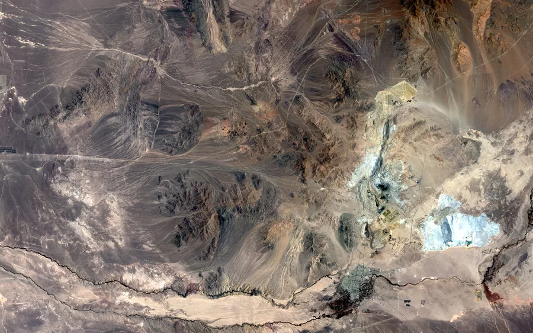
Mining
Expansion direction
-
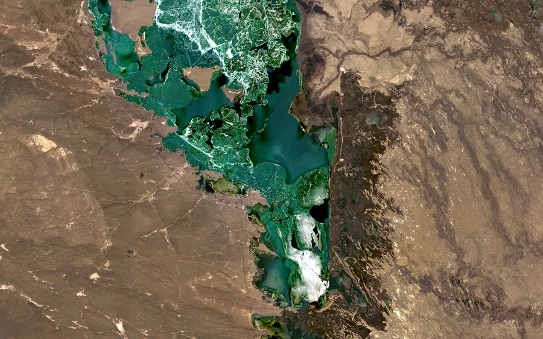
Marine
Expansion direction
Illustrative The three photographs above are public-domain Landsat scenes of other places, chosen to show the kind of ground each domain reads. They are not OrbGSS analytical outputs, not results, and not the Kızıldere pilot area.